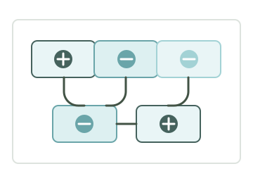

Tus brechas principales
Según tus respuestas, aquí está lo que más pesa hoy en tu operación.
Mini app gratuita
Descubre tu arquetipo operativo, tus brechas principales y el siguiente paso para ordenar tu negocio antes de delegar o escalar.
